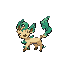

📖 英語版の図鑑説明
Cells similar to those of plants have been found in its fur. Its hard tail can fell a large tree with one stroke, and the tail's sharpness exceeds even that of a sword crafted by a master.
日本語訳
毛皮には植物に似た細胞があり、硬い尻尾は大木を一撃で倒すほど鋭い。
💡 英語名「Leafeon」の由来
英語名「Leafeon」は、leaf（葉）とeon（ブイズの名前に共通する語尾）を組み合わせた名前と考えられている。
出典 Bulbapedia
✨ リーフィアの豆知識
リーフィアの構想は古く、『金・銀』の開発中のデータに「リーフィ」という名前で、今より体格のいい姿が残っていた。
出典 Bulbapedia
📊 リーフィアの種族値
HP65
こうげき110
ぼうぎょ130
とくこう60
とくぼう65
すばやさ95
合計 525
❓ よくある質問
- リーフィアの英語名は？
- リーフィアの英語名は「Leafeon」です。
- リーフィアの英語名「Leafeon」の由来は？
- 英語名「Leafeon」は、leaf（葉）とeon（ブイズの名前に共通する語尾）を組み合わせた名前と考えられている。
- リーフィアは英語版の図鑑でどう説明されている？
- 「Cells similar to those of plants have been found in its fur. Its hard tail can fell a large tree with one stroke, and the tail's sharpness exceeds even that of a sword crafted by a master.」と書かれています。日本語にすると「毛皮には植物に似た細胞があり、硬い尻尾は大木を一撃で倒すほど鋭い。」という意味です。
リーフィアは第4世代（シンオウ地方）のポケモンです。第4世代（シンオウ地方）の英語名一覧 →